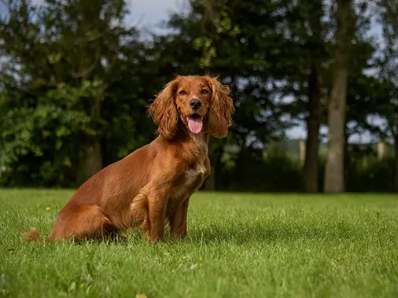
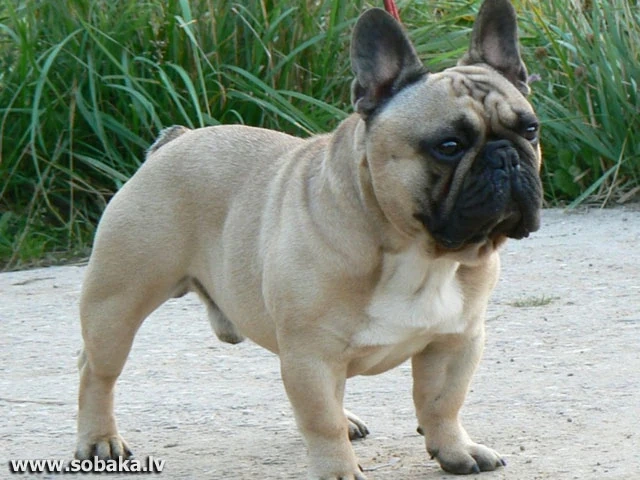
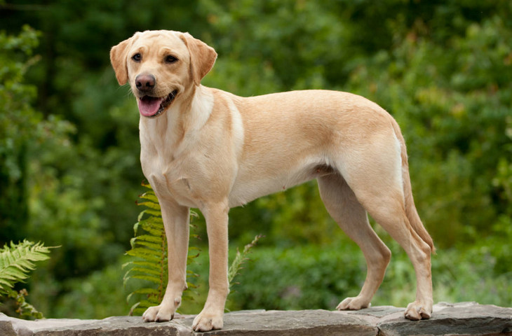

Английский кокер-спаниель

Английский кокер-спаниель – подружейная охотничья собака, выведенная в Великобритании специально для поиска и подъема под выстрел пернатой дичи. Кокер-спаниели имеют мягкую, шелковистую шерсть средней длины, которая часто окрашена в различные цвета, включая черный, рыжий, печеночный и различные комбинации.
Французский бульдог

Эти собаки умны, но упрямы, им быстро надоедает рутина. Дрессировщику придется проявить изобретательность и терпение.Французские бульдоги мало шумят, редко лают, хотя встречаются исключения.Питомцам не нужна высокая физическая активность. Достаточно регулярных прогулок и контроля массы тела.
Лабрадор-ретривер

Лабрадоры известны своей дружелюбностью и преданностью. Они легко ладят с детьми и другими животными, что делает их отличными компаньонами для семей. Лабрадоры легко поддаются дрессировке благодаря своему умению учиться и желанию угодить хозяину. Они плохо переносят одиночество и могут проявлять деструктивное поведение при недостатке внимания.